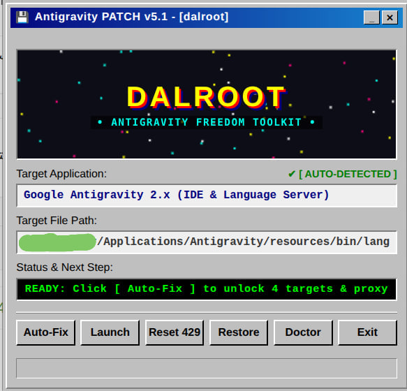

The most powerful maintenance tool for installation errors, network interference, and region restrictions.
Systematic self-healing architecture: from deep cache de-bloat and Go core patching to lightweight proxy injection.
Clears bloated GPU/Dawn caches, orphaned SingletonLocks, and artificial 429 quota tokens that cause memory stutter. Google account login, session tokens, and cookies remain 100% untouched.
✓ GPU Cache Cleared • Login Safe
Directly patches the native Go backend daemon (agy), Electron main.js, and VS Code extension to neutralize regional locks and terminate background telemetry loops that silently hog bandwidth.
✓ Native Go Core & main.js Neutralized
Eliminates the heavy latency and packet-loss overhead of system-wide TUN adapters. Injects direct SOCKS5 with 15s TCP KeepAlive so AI reasoning streams run buttery smooth and responsive even on weak or throttled internet.
✓ Zero TUN Overhead • 15s KeepAlive Active
By avoiding the kernel virtualization overhead of global TUN adapters, stopping aggressive telemetry pings, and keeping HTTP/2 connections alive with 15s heartbeats, Antigravity IDE consumes significantly fewer system resources and runs smoothly even on high-latency internet connections.
Zero telemetry. Fully offline. Native standalone binaries for all operating systems.
Windows 10, 11 (x64) • Portable Desktop GUI & CLI
Ubuntu, Debian, Arch, Fedora, openSUSE
Native Apple Silicon (M1-M4) & Intel Macs

A fully offline standalone GUI built for developers who appreciate classic keygen design, chiptune audio, and one-click diagnostics.
Install instantly via terminal without leaving your keyboard.
Get help, share ideas, and stay updated with the latest news.
Powerful features designed for developers and power users.
Remove corrupted installation files, cache, and registry keys instantly.
Automatically fix region-locked errors for constrained networks.
Clean the system without losing your browser cookies or login sessions.
Download now and solve installation errors in seconds.